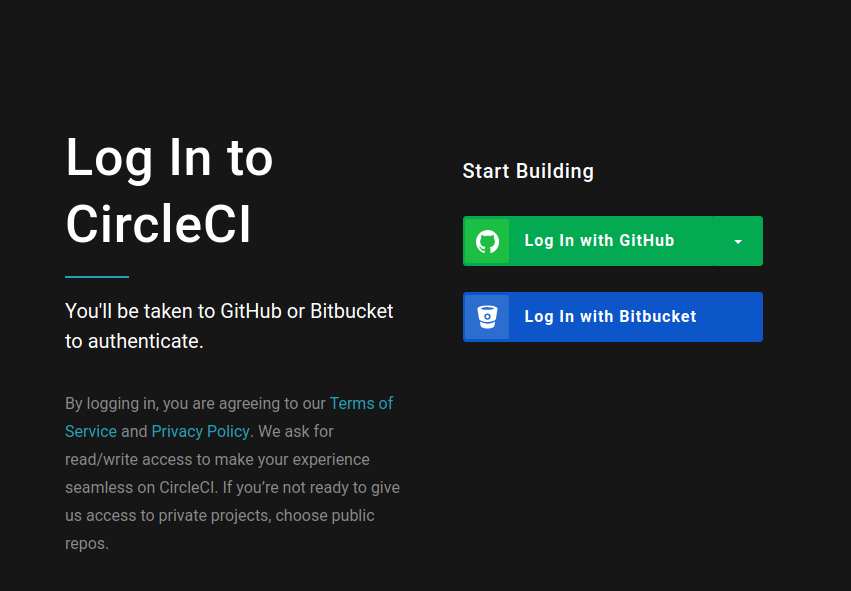
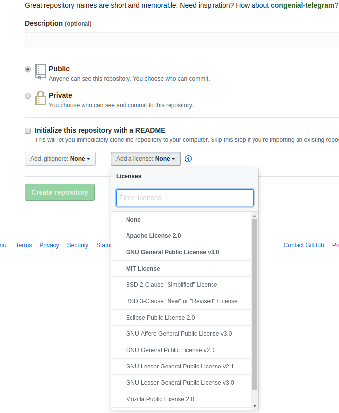

Tips
1. CircleCI
1.1. Circle CIとは?
Circle CIはGitHubとの連携が可能なCI(Continuous Integration)/CD(Cotinuous Delivery)サービスです．
CI/CDは開発者がリポジトリにプッシュするのを検知し，ビルドとテスト，更には開発者への通知をツールが自動で行うことで，開発以外の作業負担を減らす手法です．
本記事もCircle CIを使ったビルドとデプロイを行っており，リモートリポジトリのmasterブランチにプッシュすると，自動でビルドされて公開されるようになっています．
CI/CDサービスには以下のようなものがあります．
またJenkinsなどのOSSを利用し，オンプレミスにCI/CDツールを乗せることも可能です．
1.2. Circle CIを使ってみる
まずはログイン画面からログインしましょう，アカウントはGitHubのものがそのまま使えます．

"ADD PROJECTS"から"galc"のプロジェクトを探し，"Set Up Project"でプロジェクトをCircle CIのビルド対象としましょう．

Circle CIではYAMLと呼ばれるマークアップ形式で設定を記述します．
プロジェクト追加後に表示される次の画面では，主要な言語における設定ファイルのテンプレートを入手することができるので，ここでは"Linux"と"Go"を選択してテンプレートを入手しましょう．

テンプレートは.gitのあるディレクトリ直下に.circleci/config.ymlとして保存します．
$ mkdir .circleci
$ touch .circleci/config.yml
テンプレートのORG_NAMEとREPO_NAMEを，GitHubのユーザ名とプロジェクト名に書き換えて.circleci/config.ymlに記述しましょう，ユーザ「OriishiTakahiro」でプロジェクト「galc」の場合はこうなります．
$ git add .
$ git commit -m "Setup CI"
$ git push origin master
しばらくすると，JOBSの一覧にテストの結果が表示されます．

2. Markdown記法
Markdownという記法があります．
Gitリポジトリの説明書には慣習的にREADME.mdという名前を使用するという話をしました．
Markdownは.mdという拡張子を使います．
文法も簡単で，エンジニアが触れる多くの環境下で利用できるマークアップ言語です．
GitHubやGitLabではMarkdownを自動的にHTMLに解釈して表示する機能があり，またQiitaやはてなブログなどもブログ記事をMarkdownで書くことが可能です．
ぜひとも身につけておきたい技術のひとつです．
3. OSSライセンス
就職後の自社開発などプライベートリポジトリでの開発に関しては，あまり関係のない話かもしれませんが，もしみなさんがOSS(Open Source Software)の開発をパブリックリポジトリで行うのであれば，改変や再配布に関するライセンス表記をしておいたほうが無難かもしれません．
何も表示しないNo Licenseであれば複製や再配布，修正に関する行為が他の誰にも権利を与えませんということになります．
主なOSSライセンスは次のようなものがあり，MITライセンスが一番制約がゆるいです．
- MIT
- Apache License 2.0
- GNU General Public License v3.0
- BSD 3-Clause
- No License
これら主要なOSSライセンスはGitHub上でプロジェクト作成時のREADME.mdを初期化する際に，最初から含めるように設定することもできます．

4. ログの表示オプション
git logコマンドを実行する際，デフォルトでは欲しい情報が分かりづらいことも多いかと思います．
そこでここではよく使うオプションを紹介します．
# 他ブランチも表示
$ git log --branches
# リモートリポジトリの他ブランチも表示
$ git log --branches --remotes
# 簡潔に一行で表示
$ git log --oneline
# 直近5コミットのみ表示
$ git log -n 5
# グラフ形式で表示
$ git lo --graph
5. コミットに残したくないファイルがある
リポジトリには，シークレット情報やログファイル，バイナリファイル，メタデータファイルなどコミットに残したくないファイルが生じる場合があります．
git add実行時に対象に含めなければよい...のは正しいですが，非常に面倒ですし，Gitはもっと良い解決策を用意してくれています．
それが.gitignoreという隠しファイルで，そちらにGitで管理したくないファイル名を記述することでコミットの対象になることから免れます．
ためしに作ってみましょう．
# 適当なろリポジトリを作成
$ mkidr $HOME/test-repo
$ cd $HOME/test-repo
$ mkdir logs
$ git init
次のソースコードをmain.goとして保存
package main
import (
"fmt"
"log"
"os"
"time"
)
func main() {
// ログの出力先を指定
logfile, err := os.OpenFile("./logs/"+time.Now().Format("2006-01-02_15-04-05.log"), os.O_APPEND|os.O_CREATE|os.O_WRONLY, 0666)
if err != nil {
fmt.Fprintf(os.Stderr, "%v\n", err)
os.Exit(1)
}
log.SetOutput(logfile)
// "Hello, <入力文字>"をログに残して表示
msg := "Hello, " + os.Args[1] + "!"
log.Println(msg)
fmt.Println(msg)
}
次のコードを.gitignoreとして保存
# から始まる行は無視
# logsディレクトリ以下のファイルをすべて無視
logs/*
# /で終わらないものはファイル単位で無視
hello-bin
# Dockerを使って，hello-binの名前でバイナリファイルをビルド
$ sudo docker run -v ${PWD}:/go golang go build main.go -o hello-bin
# 実行してログファイルを生成
$ for i in `seq 1 10`; do; ./hello-bin hoge; sleep 1; done
ls logs
# ステージングされていないことを確かめる
$ git add .
また，特定の言語やフレームワークについて.gitignoreを自動生成してくれるgiboというツールも存在します．
6. ファイルでなくディレクトリのみコミットしたい
.gitignoreファイルを使うと，特定のファイルをコミット対象に含めないことが可能であると学びました．
しかしこの手法ではlogsディレクトリがコミットされず，クローンしてそのまま実行しようとすると「logsディレクトリなんてないよ！」と怒られてしまいます．
そこで隠しファイル.gitkeepを使ったディレクトリだけを残すテクニックがあります．
.gitignoreを以下のように書き換えてください．
# /で終わるものはそのディレクトリ以下すべて無視
logs/*
# !から始まる行はコミットに含める
!.gitkeep
# /で終わらないものはファイル単位で無視
hello-bin
# .gitkeepファイルをlogsディレクトリに追加
touch logs/.gitkeep
# ステージングされていることを確認
$ git add .
$ git status